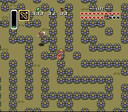
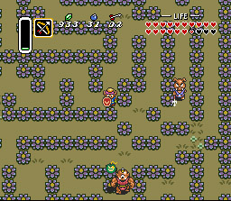

|


Zelda 3 Challenge - Screen Shots - Batch 3
Here, I was testing my block-finding program. Working with mostly bushes, I created a huge maze in relatively little time.


You might be thinking, "I'd just whack the bushes with my sword, or if I didn't have one, I'd pull them up!" Well, the first time you reach this area, you're going to have all the ability of a cute little bunny... so you'll have to explore the maze for real. Later in the game, you can always return and mow it down with your dash boots. And no, the cyclops' bombs can't destroy any of the bushes.
Questions? Ideas? Suggestions?
Write to me!
Return to Zelda3C's main page
This site is not affiliated with nor endorsed by Nintendo in any way.
|